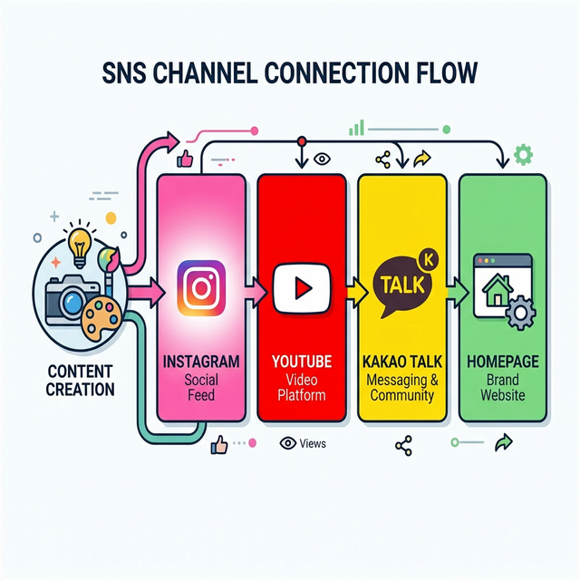
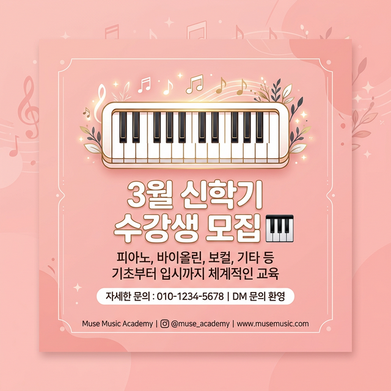
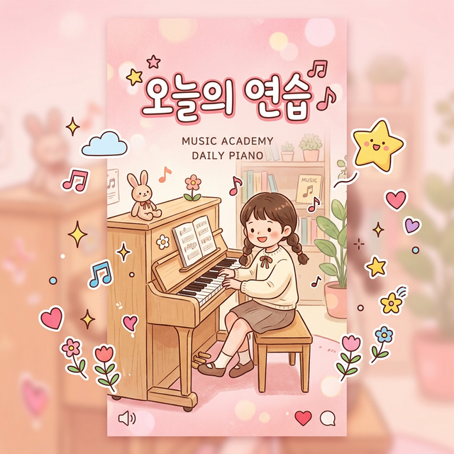
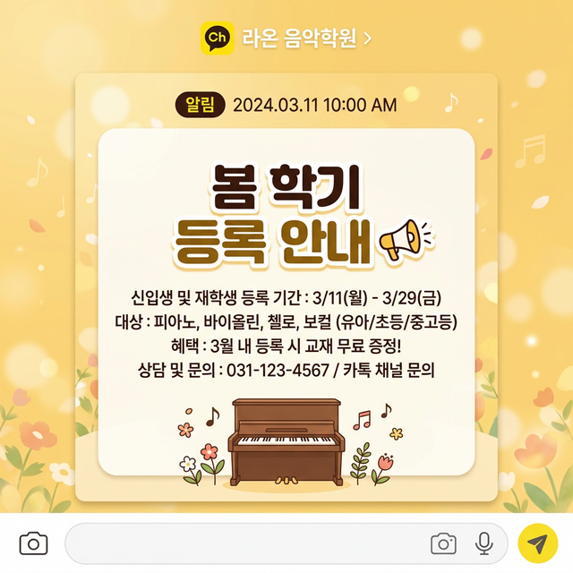
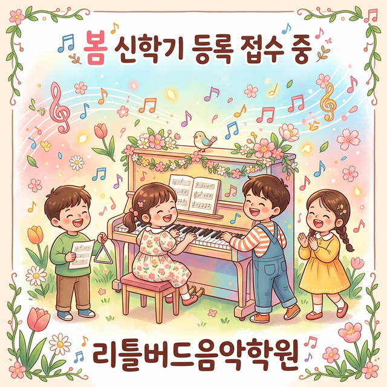
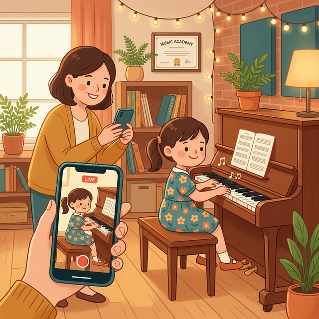
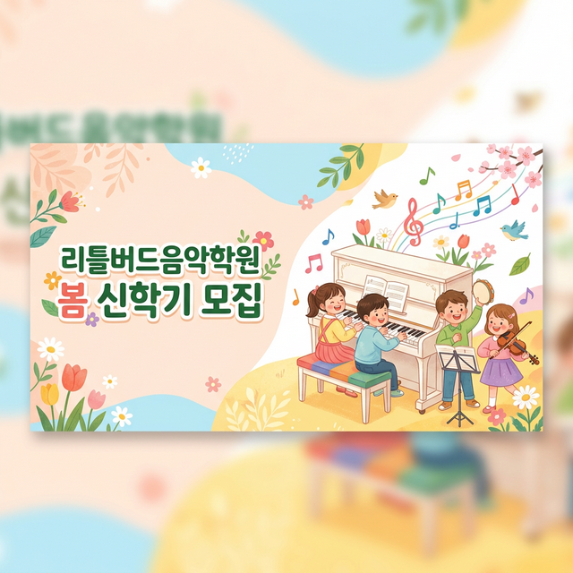
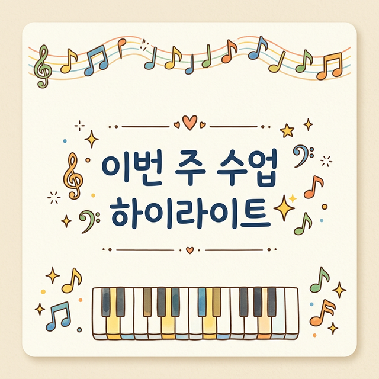

영상 하나로 모든 채널에 올리는 순서예요

채널 연결 다이어그램영상 하나를 촬영하면 유튜브 + 인스타 + 카카오 세 곳에 동시에 올릴 수 있어요. 같은 영상이어도 각 플랫폼에서 새로운 사람들에게 보여지기 때문에 효과가 3배!
학원의 일상과 분위기를 사진/영상으로 보여주는 최고의 채널

휴대폰을 세로로 들고 15초~60초 영상을 촬영해요. 수업 중 아이가 연주하는 장면이 가장 좋아요!
인스타그램 앱을 열어주세요.
화면 맨 아래 가운데에 있는 + 버튼을 눌러요.
하단에 나오는 메뉴에서 릴스를 선택해요.
왼쪽 아래 갤러리 아이콘을 눌러서 아까 촬영한 영상을 선택해요.
상단의 음표 아이콘을 눌러 배경 음악을 넣을 수 있어요. 안 넣어도 괜찮아요!
"리틀버드음악학원" 이름이나 귀여운 스티커를 넣으면 더 예뻐요.
영상 설명을 간단히 적고, 해시태그를 붙여주세요.
"공유" 또는 화살표 버튼을 누르면 업로드 완료!
릴스는 팔로워가 아닌 사람에게도 추천되기 때문에 새 학부모를 만나는 가장 좋은 방법이에요. 짧고 귀여운 영상일수록 조회수가 높아요!
화면 맨 아래 가운데의 + 버튼을 눌러요.
하단 메뉴에서 게시물을 선택해요.
갤러리에서 올리고 싶은 사진을 골라요. 여러 장 선택하면 슬라이드 형태로 올라가요!
사진이 어두우면 밝기를 올리고, 필터를 적용해보세요. 자연스러운 게 좋아요.
사진 설명과 함께 해시태그를 넣어주세요.
"공유"를 누르면 피드에 게시물이 올라가요!
피드 사진은 정사각형(1:1)으로 잘리니까, 중요한 부분이 가운데에 오도록 찍어주세요. 첫 번째 사진이 제일 예쁜 걸로!
홈 화면 왼쪽 상단에서 내 프로필 사진 옆의 + 를 눌러요.
갤러리에서 올리고 싶은 사진이나 영상을 골라요.
위쪽 아이콘들을 눌러서 글씨나 스티커를 넣을 수 있어요.
"내 스토리" 버튼을 누르면 완료! 24시간 후 자동으로 사라져요.
스토리는 24시간 후 사라지니까 부담 없이 올려보세요! "오늘의 수업 모습" 같은 가벼운 일상을 올리기 좋아요.
연주회, 발표회 영상을 올려서 오래오래 보관하고 공유해요

YouTube 앱을 열거나 youtube.com에 접속해요.
화면 상단 또는 하단의 + 버튼을 찾아 눌러요.
메뉴에서 동영상 업로드를 선택해요.
갤러리에서 올리고 싶은 동영상 파일을 선택해요.
예시: "리틀버드 음악학원 | 연주회 모습"
학원 이름을 꼭 넣어주세요!
학원 소개 + 연락처 + 해시태그를 넣어요.
예시: "울산 리틀버드음악학원 연주회 영상입니다. 052-XXX-XXXX"
영상 중 가장 예쁜 장면을 썸네일로 선택하거나, 직접 만든 이미지를 업로드해요.
어린이가 나오는 영상이면 "예, 아동용입니다"를 선택해요. 법적으로 중요해요!
"공개"를 선택하면 누구나 볼 수 있어요. 학부모만 보게 하려면 "일부 공개"를 선택해요.
"게시" 또는 "업로드"를 누르면 완료! 처리 시간이 좀 걸릴 수 있어요.
제목에 "울산 피아노학원", "어린이 피아노" 같은 키워드를 넣으면 검색에 잘 나와요. 썸네일은 밝고 선명한 사진이 클릭률이 높아요!
쇼츠는 60초 이하, 세로(9:16) 영상이어야 해요. 인스타 릴스용 영상 그대로 쓸 수 있어요!
유튜브 앱에서 하단 + 버튼을 눌러요.
메뉴에서 쇼츠 만들기를 선택해요.
왼쪽 아래 갤러리 아이콘을 눌러 영상을 선택해요.
원하면 텍스트나 배경 음악을 넣을 수 있어요.
짧고 눈에 띄는 제목을 적어요. 예: "피아노 초보 3개월 성장기"
업로드 버튼을 누르면 완료!
인스타 릴스에 올린 영상을 유튜브 쇼츠에도 그대로 올리세요! 같은 영상인데 유튜브에서 새로운 사람들에게 보여져요. 한 번의 촬영, 두 번의 노출!
위의 동영상 업로드 또는 쇼츠 만들기를 먼저 해요.
갤러리에 있는 같은 영상을 인스타그램 릴스로도 올려요.
유튜브 구독자 + 인스타그램 팔로워 모두에게 영상이 보여져요.
유튜브 영상 링크를 인스타 프로필 소개란(Bio)에 넣어두면, 학부모가 인스타에서 유튜브로 바로 이동할 수 있어요.
학부모에게 직접 알림을 보내고 1:1 상담까지 할 수 있는 채널

검색창에 "카카오톡 채널 관리자센터"를 검색하거나, 카카오 비즈니스 앱을 열어요.
왼쪽 메뉴에서 포스트를 찾아 클릭해요.
"새 포스트 작성" 버튼을 눌러요.
사진이나 영상을 넣고, 학원 소식이나 일정을 적어요.
"발행" 버튼을 누르면 채널 친구들이 볼 수 있어요!
포스트는 채널 홈에 계속 남아있어요. 학원 안내사항이나 행사 일정을 올리면 학부모가 언제든 확인할 수 있어요.
카카오톡 채널 관리자센터에 로그인해요.
왼쪽 메뉴에서 메시지를 선택해요.
메시지 보내기 버튼을 눌러요.
전체를 선택하면 모든 채널 친구에게, 그룹을 선택하면 특정 그룹에게만 보내요.
텍스트 + 이미지로 메시지를 구성해요. 짧고 핵심적으로!
"발송" 버튼을 누르면 학부모 카카오톡에 바로 도착해요!
알림 메시지는 카카오톡에 직접 뜨기 때문에 확인율이 아주 높아요! 단, 너무 자주 보내면 차단될 수 있으니 주 1~2회가 적당해요.
관리자센터에서 1:1 채팅이 활성화되어 있는지 확인해요.
학부모가 카카오톡으로 문의하면 1:1 채팅으로 바로 대화할 수 있어요.
수업 일정, 수강료, 학원 위치 등을 1:1로 편하게 안내해요.
자주 묻는 질문(수업 시간, 수강료, 위치)에 대한 답변을 미리 만들어 놓으면 빠르게 응대할 수 있어요. 관리자센터에서 "자동응답" 설정도 가능해요!
지역 학부모가 검색할 때, 우리 학원이 가장 먼저 보이게 만들어요
인스타는 '발견'용, 블로그는 '확인'용이에요. 학부모가 인스타에서 학원을 발견하면, 블로그에서 상세 정보를 확인하고 등록을 결정해요.
네이버 블로그 관리 메뉴에서 카테고리를 만들어요.
"학원 소개", "수업 후기", "발표회/연주회", "교육 정보", "공지사항" 5개를 만들어요.
학부모가 가장 궁금한 "학원 소개"를 맨 위에 배치해요.
각 카테고리에 가장 잘 쓴 글을 대표 글로 고정해요.
학원명, 위치, 연락처, 수업 과목을 프로필에 꼭 넣어요.
카테고리가 곧 학원 홈페이지 메뉴에요. 학부모가 블로그에 들어왔을 때 원하는 정보를 바로 찾을 수 있게 정리해두세요.
가장 효과적! "OO 학생 3개월 만에 체르니 30 완주" 같은 구체적 성과
사진 많이 + 학부모 댓글 캡처로 신뢰 극대화
"초등 피아노 수업 어떻게 진행되나요?" (신규 학부모 유입)
레슨 모습, 시설 사진, 선생님 소개
"피아노 시작 적정 나이" 같은 검색 유입 글
교육 철학, 운영 에피소드로 차별화
글 1편당 1,500자 + 사진 5~10장이 이상적이에요. 인스타에 올린 사진을 재활용하면 부담이 훨씬 줄어요!
예: "울산 남구 피아노학원 — 5살 첫 수업 후기"
네이버 검색창에 "울산 피아노학원" 입력 → 자동완성 키워드 메모
"울산 삼산동 리틀버드음악학원에서 오늘..." 처럼 자연스럽게
사진 올릴 때 ALT 텍스트(대체 텍스트)에 "울산 음악학원" 넣기
네이버 키워드플래너(searchad.naver.com)에서 검색량을 확인할 수 있어요. '울산 피아노학원'보다 '울산 남구 피아노학원'처럼 구체적일수록 경쟁이 적어 상위 노출 확률이 높아요.
추천 빈도: 주 2회 (인스타 재활용 1편 + 오리지널 1편)
시간: 글 1편당 30분~1시간 (사진 재활용 시)
처음부터 주 5회 쓰려고 하지 마세요. 주 2회로 시작해서 꾸준히 쌓아가는 게 핵심이에요. 3개월만 꾸준히 하면 검색 노출이 확 달라져요!
같은 사진을 블로그에도 올리되, 5~10장으로 늘려요.
인스타 짧은 캡션을 1,500자 이상의 블로그 글로 확장해요.
인스타에 없는 지역명+학원명 포함 제목을 작성해요.
완성된 블로그 글 링크를 카카오채널에도 공유해요.
콘텐츠 1개로 인스타 + 블로그 + 카카오 3채널을 커버할 수 있어요. 이게 1인 원장의 현실적인 멀티채널 운영법이에요.
나노바나나2로 포스터, 홍보 이미지를 무료로 만들어보세요

휴대폰이나 컴퓨터에서 gemini.google.com에 접속해요. 구글 계정으로 로그인하면 바로 사용할 수 있어요.
채팅창에 원하는 이미지를 설명하면 나노바나나2가 자동으로 이미지를 만들어줘요. 따로 메뉴를 찾을 필요 없이 "~~ 이미지 만들어줘"라고 말하면 돼요.
구글 계정만 있으면 무료로 사용할 수 있어요. 별도 결제나 설치가 필요 없답니다.
아래 예시를 복사해서 Gemini에 그대로 붙여넣기 하세요. 학원 이름이나 날짜만 바꾸면 OK!
만들어진 이미지를 꾹 누르거나(휴대폰) 마우스 오른쪽 클릭(컴퓨터)해서 "이미지 저장"을 누르면 PNG 파일로 저장돼요.
저장한 이미지를 인스타그램 앱에서 피드 게시물이나 스토리에 바로 업로드할 수 있어요.
카카오채널 관리자센터에서 알림을 보낼 때 저장한 이미지를 첨부하면 훨씬 눈에 띄는 알림이 돼요.
유튜브 스튜디오에서 영상 올릴 때 "썸네일 업로드" 버튼을 눌러 만든 이미지를 설정하면 돼요.
결과가 마음에 안 들면 "이거 좀 수정해줘"라고 대화하듯 말하면 돼요. "색을 더 밝게", "글씨를 더 크게" 등 원하는 대로 수정할 수 있어요.
포스터에 학원 이름, 날짜, 전화번호 등 한글 텍스트를 넣을 수 있어요. 프롬프트에 원하는 문구를 따옴표로 감싸서 적어주세요.
인스타 피드는 "1:1", 인스타 스토리는 "9:16", 유튜브 썸네일은 "16:9"라고 적으면 딱 맞는 크기로 만들어줘요.
"이미지 만들어줘"보다 "밝은 파스텔톤, 피아노를 치는 어린이, 음표가 날아다니는 일러스트, 따뜻한 분위기"처럼 색감, 분위기, 구체적인 장면을 설명하면 훨씬 좋은 결과가 나와요.
상황별로 따라하면 되는 단계별 가이드예요

수업 클립 공유
홈페이지 메인 배너에 적용한 모습무료 디자인 도구(나노바나나2, 미리캔버스, 캔바)로 예쁜 포스터를 만들어보세요. 같은 이미지를 여러 채널에 동시에 올리면 일관된 브랜드 이미지가 만들어져요!

학부모에게 알림이 도착!촬영 전에 학부모 동의를 미리 받아두면 편해요. 학기 초에 "SNS에 수업 모습을 올려도 될까요?" 동의서를 한 번 받아두세요.
발표회 전에 나노바나나2로 홍보 포스터도 만들어보세요. 사전 홍보 → 당일 촬영 → 사후 공유까지 한 세트로 운영하면 효과가 배가 돼요!
![리틀버드음악학원 로고]()